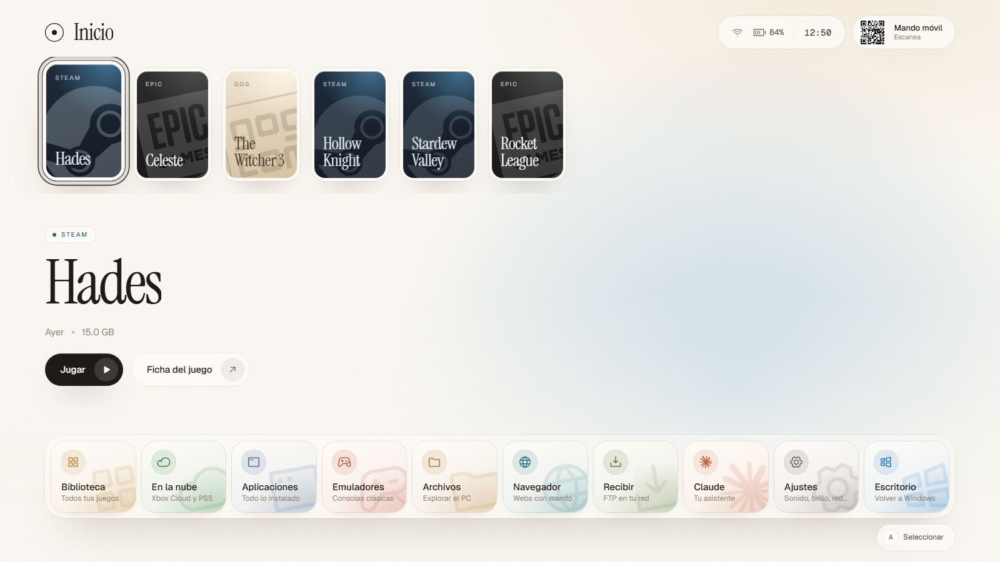
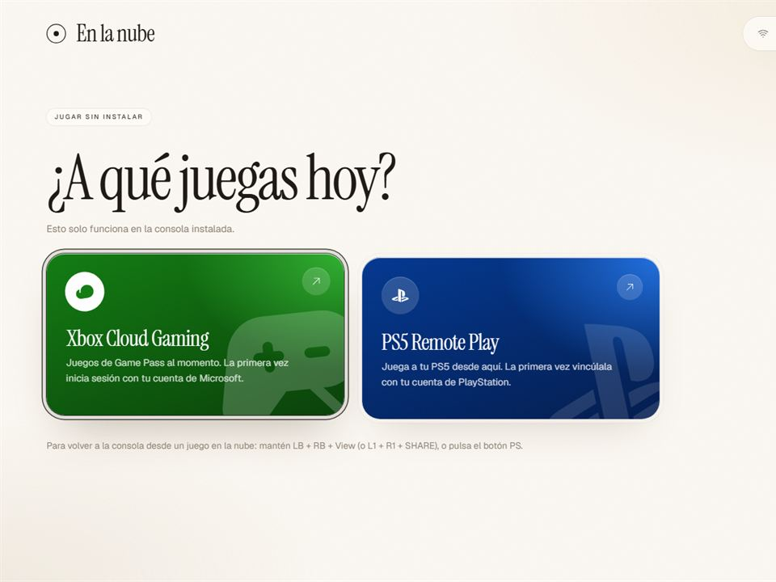
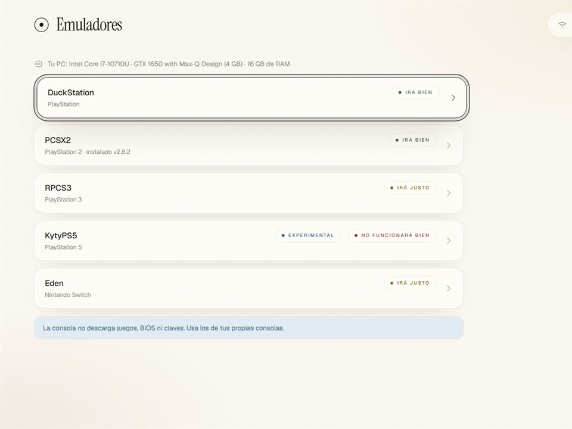
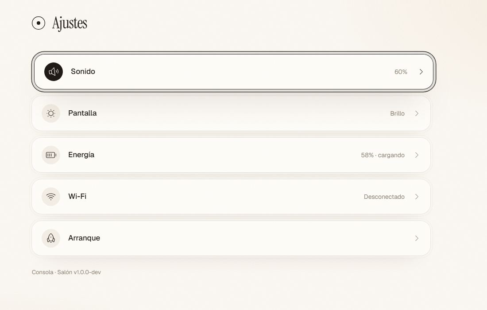

Conecta mandos de Xbox y PlayStation
Xbox, PS4 y PS5 por cable o Bluetooth, sin drivers. El touchpad hace de ratón.
Versión 1.0.0 «Salón», gratis y de código abierto
Consola cambia el escritorio de Windows por una pantalla como la de una PS5. Juegas, abres apps y cambias ajustes con el mando, el teclado o el móvil.

Consola reúne lo que tienes instalado en Steam, Epic, GOG y Xbox o Game Pass. Los juegos de otras tiendas salen del menú Inicio: ábrelos y pulsa «Marcar como juego».
Xbox Cloud Gaming a pantalla completa y Remote Play de tu PS5 con chiaki-ng.

Se maneja con el mando y trae accesos a YouTube, Netflix, Prime Video y más.
Se instalan y se actualizan solos. Si una versión nueva falla, vuelves a la anterior.

Xbox, PS4 y PS5 por cable o Bluetooth, sin drivers. El touchpad hace de ratón.
Escanea el QR: el móvil hace de mando, touchpad o teclado, y cambia de modo solo.
Desde cualquier juego o app vuelves a la pantalla de inicio de Consola con un gesto.
Esc
Con teclado
Mantén pulsada la tecla Esc.
Xbox
Con mando
Pulsa el botón Xbox del mando.
LB + RB + View
En la nube
Mantén los tres, o L1 + R1 + SHARE en un mando de PlayStation.
Activa «Arrancar directamente en la consola» y, al encender el PC, verás Consola en lugar del escritorio de Windows.
Un botón te devuelve al escritorio normal cuando lo necesites.
Sonido, brillo, energía y Wi-Fi se cambian con el mando.
Trae explorador de archivos, recepción por FTP en tu red y el asistente Claude.

Nada. Es gratis y de código abierto, con licencia MIT.
En Windows 10 y Windows 11 de 64 bits.
El instalador aún no está firmado. Pulsa «Más información» y luego «Ejecutar de todas formas».
No. No descarga juegos, BIOS ni claves: usa los de tus propias consolas.
Pablo Nolasco. El código y las versiones están en GitHub.